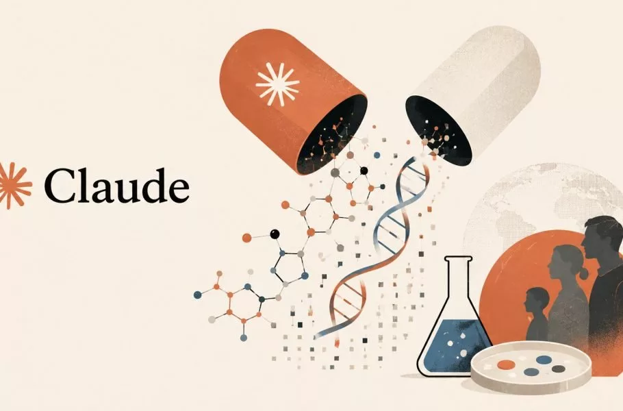
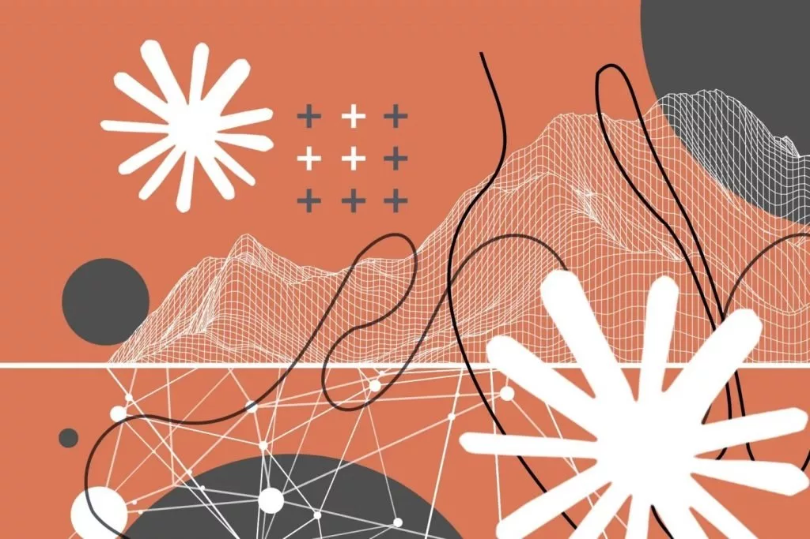

آنتروپیک وارد صنعت داروسازی میشود؛ توسعه داروهای اختصاصی با هوش مصنوعی
آنتروپیک پس از معرفی پلتفرم Claude Science، اکنون میخواهد وارد عرصه تولید دارو برای درمان بیماریهای نادیده گرفتهشده شود.
اشتراک گذاری:

آنتروپیک که با مدلهای قدرتمند هوش مصنوعی خود در دنیای فناوری جولان میدهد، اکنون قدم در مسیر جدیدی گذاشته است. این شرکت قصد دارد با پلتفرم جدید Claude Science، وارد عرصه داروسازی شود و داروهای اختصاصی خود را تولید کند.
به گزارش ورج، مدیران آنتروپیک در رویداد The Briefing: AI for Scienc از پلتفرم Claude Science پرده برداشتند که با گردآوری ابزارها و مجموعهدادههای پراکنده در یک محیط یکپارچه، نمودارها و تصاویر بصری دقیقی را برای دانشمندان ایجاد میکند. مدیر بخش علوم زیستی آنتروپیک در این مراسم اعلام کرد که شرکت قصد دارد روی کشف درمان برای بیماریهای نادیده گرفتهشده تمرکز کند. با وجود استقبال گسترده مشتریان حوزه بیوتکنولوژی از این ابزار، آنتروپیک هنوز جزئیات دقیقی درباره نحوه انجام آزمایشهای حیوانی، کارآزماییهای بالینی یا همکاری با تولیدکنندگان دیگر ارائه نکرده است.
داروهای هوش مصنوعی آنتروپیک
شرکتهای هوش مصنوعی اشتیاق فراوانی برای جذب مشتریان علمی و دارویی دارند. غولهایی مانند OpenAI، آمازون و گوگل پیشازاین ابزارهای علوم زیستی خود را روانه بازار کردهاند. در این میان، آنتروپیک با تصمیم جدید خود در کنار شرکتهای پیشگام این حوزه مانند Insilico و Isomorphic Labs قرار میگیرد.

بااینحال، متخصصان میگویند کشف دارو با هوش مصنوعی یک مفهوم بسیار گسترده است. «نامشیک هان»، استاد دانشگاه کمبریج، میگوید پژوهشگران از هوش مصنوعی در تمام مراحل داروسازی، از یافتن ترکیبات جدید تا تحلیل دادهها، استفاده میکنند. «متیو تاد»، استاد کالج دانشگاهی لندن، نیز باور دارد که این ابزارها سرعت تحقیقات را به شکل خیرهکنندهای افزایش میدهند، اما کمبود دادههای تجربی باکیفیت در زیستشناسی همچنان یک مانع جدی محسوب میشود.
فناوری هوش مصنوعی هرگز نمیتواند به تنهایی نیاز به انجام آزمایشهای فیزیکی را از بین ببرد. «فرانک فون دلفت»، استاد زیستشناسی شیمیایی در دانشگاه آکسفورد، توضیح میدهد که مدلهای هوش مصنوعی هنوز فاصله زیادی تا حذف آزمایشهای تجربی دارند.
دانشمندان باید داروها را از نظر کارایی، سمیت و قابلیت تحویل ایمن در دنیای واقعی بسنجند. به نظر میرسد آنتروپیک نیز این واقعیت را به خوبی درک کرده است؛ گزارشها نشان میدهند که این شرکت در سال گذشته زیستشناسان متعددی را استخدام کرده و آزمایشگاههای اختصاصی خود را ساخته است. منابع آگاه میگوید این غول فناوری توانسته است نخبگان علمی را از شرکتهای بزرگ داروسازی و مؤسسات دانشگاهی معتبر جذب کند تا زیرساختهای فیزیکی لازم را برای این مأموریت بزرگ فراهم آورد.